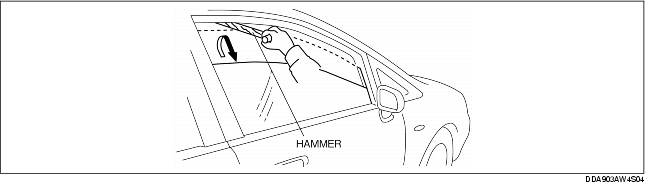

|
STEP
|
INSPECTION
|
ACTION
|
|
|---|---|---|---|
|
1
|
• Turn the ignition switch to the ON position.
• Fully close the driver's side power window.
• Open the power window using the manual open/close function on the power window main switch.
• Verify that the power window stops 30 mm lower than the fully closed position for 1 second.
• Does power window operate properly?
|
Yes
|
Two-step down function is normal.
|
|
No
|
• Verify that the auto open/close function operates properly.
If the auto open/close function operates properly:
• Verify that the two-step down function is turned on.
If the auto open/close function does not operate properly:
• Replace the power window main switch (power window control unit is malfunctioning.) (See POWER WINDOW MAIN SWITCH REMOVAL/INSTALLATION.)
|
||